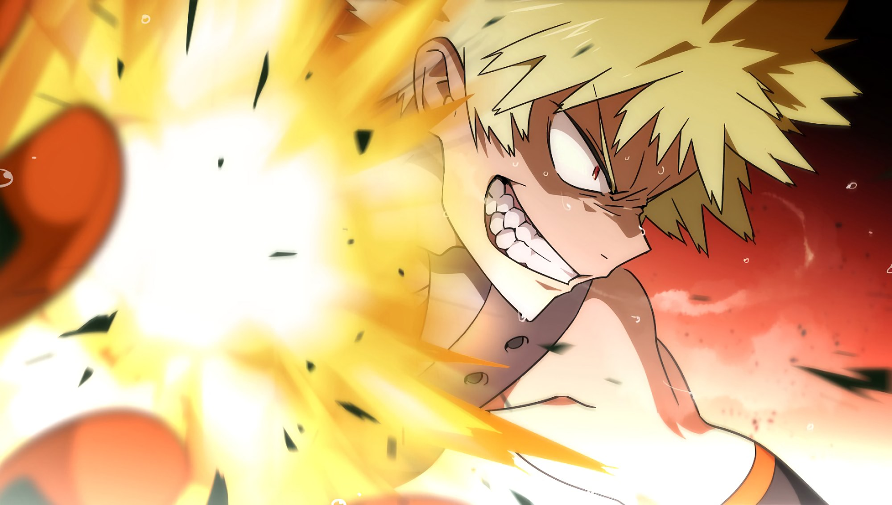

Explosion
His palms sweat nitroglycerin and his patience sweats nothing at all. Every fight is an argument he intends to win by being louder than the other person's entire existence — and the blasts keep getting bigger, because the sweat never stops coming.

Explosion
Field notes. Subject: Katsuki Bakugo, who has never lost an argument he was willing to explode about. Three truths govern him. First: the sweat is the weapon. His palms secrete a nitroglycerin-like compound, and he detonates it at will — the more he sweats, the larger the blast, which means the longer the fight goes, the worse it gets for everyone who isn't him. Second: the pain is the price. Every blast kicks back into his own arms and shoulders; he simply decided long ago that his body could take it. Third: the aim is the art. Raw blasts are for amateurs — he compresses them into piercing beams, spins them into diving torpedoes, and condenses whole barrages into a single point of absolute refusal.
Feature map
Level-by-level features
Nitroglycerin Sweat
Passive · Sweat pool, maximum PB + 2 · Gain 1 Sweat at the start of each of your turns; gain 1 Sweat when you take damage (once per turn) · Sweat never buys explosions — it feeds them: spend Sweat alongside a CE cost to add +1d6 fire per Sweat.
His hands are always a little damp. Veterans learn to read the sheen on his palms the way sailors read clouds — when the sweat starts beading, something is about to stop existing. The body manufactures ammunition without asking permission.
Explosion
Action · 2 CE · You detonate the sweat in your palms at one creature within 30 ft, or a 15-ft cone · 2d6 fire damage, Dexterity save for half · Before damage, you may feed the blast any amount of Sweat: +1d6 fire per Sweat.
The basic argument. He doesn't aim so much as declare — palm out, spark, thunder. Walls learn to flinch. The cone is for crowds; the single blast is for the one person who talked too much.
Blast Dash
Bonus action · 1 CE · You aim a blast at the ground and ride the recoil up to 30 ft in a straight line. This movement does not provoke opportunity attacks.
He figured out early that explosions push both ways. Aim the blast down and the ground becomes optional. He crosses battlefields in a series of deafening skips, landing exactly where the other person didn't want him.
AP Shot
Action · 3 CE · You squeeze the blast through cupped hands into a 60-ft line, 5 ft wide · 4d6 piercing damage, Dexterity save for half · Ignores half cover · Feed it up to 2 Sweat: +1d6 piercing per Sweat.
The refined argument. He cups one hand around the other and squeezes the blast through the gap — a needle of force that punches through cover and cover stories alike. Precision, from the least precise person alive.
Stun Grenade
Action · 2 CE · You set off a blinding flash centered within 60 ft, 20-ft radius · Constitution save or blinded until the end of your next turn.
Sometimes the loudest thing he does is light. The flash goes off like a second sunrise, and while everyone is seeing spots, he's already somewhere else, palms crackling.
Growing Arsenal
Passive · Your Explosion damage increases by 1d6 (now 3d6).
The sweat keeps coming and the blasts keep growing. He doesn't train to hit harder — his body simply refuses to stay the same size of problem.
Howitzer Impact
Action · 6 CE · You spin into a blazing tornado and dive up to 60 ft in a straight line (no opportunity attacks), then detonate: 20-ft radius · 8d6 fire damage, Dexterity save for half · Feed the dive any Sweat: +1d6 fire per 2 Sweat · You take 2d6 fire damage (recoil — cannot be reduced or redirected).
The ultimate argument. He spins until he's a tornado with a grudge, then dives straight down the middle of it — a human torpedo wrapped in his own firestorm. The landing breaks the ground. It also breaks him, a little. He considers this a fair trade.
Cluster
Passive · Once per turn when you damage a creature with a CE-costed explosion, feed it any amount of Sweat: +1d6 fire per Sweat · You no longer take recoil damage from your own explosions.
The final argument. He condenses whole barrages into a single point — every blast he's ever thrown, folded down to the size of a fist, delivered all at once. His arms finally stopped complaining years ago. They learned.
Four feats, all loud.
Explosion teaches four feats. Each is optional, and you must meet its listed prerequisite before taking it.
Grenadier Gauntlets
Your Sweat maximum becomes PB + 6, and you begin each combat with 2 Sweat already stored. The gauntlets collect what your palms make and keep it for later — a savings account that pays out in thunder.
AP Shot: Auto-Cannon
Bonus action · 1 CE + 1 Sweat · Fire a quick AP Shot: 30-ft line, 5 ft wide · 2d6 piercing damage, Dexterity save for half. The full-power version takes aim; this one just takes offense.
Point-Blank
When you hit a creature within 5 ft with Explosion, add 2d6 fire damage and push it 10 ft (no save on the push if it failed the Dexterity save). He has never understood the concept of a minimum safe distance. There isn't one.
Final Howitzer
Once per long rest, your Howitzer Impact costs 2 less CE and deals +2d6 fire damage. For one dive, the tornado is bigger, the landing is worse, and the argument is over.
Edge cases and shared systems.
Campaign canon notes